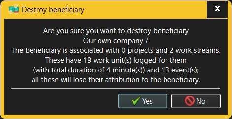

The Destroy Beneficiary dialog requests confirmation when an attempt is made to destroy an existing Beneficiary.

When destroying a Beneficiary, any Projects and Work Streams associated with the destroyed Beneficiary will lose their association with that Beneficiary. As a consequence, any Work items and comments logged for the Activities and Tasks allocated to these Projects and Work Streams will lose their attribution to a specific Beneficiary. The Destroy Beneficiary dialog will therefore show just how much an impact the Beneficiary's destruction will have on the recorded work history.
Only someone with Administrator or Manage Beneficiaries capabilities is allowed to destroy Beneficiaries. However, anyone who can log into a given workspace can see all Beneficiaries defined there.
See also: -